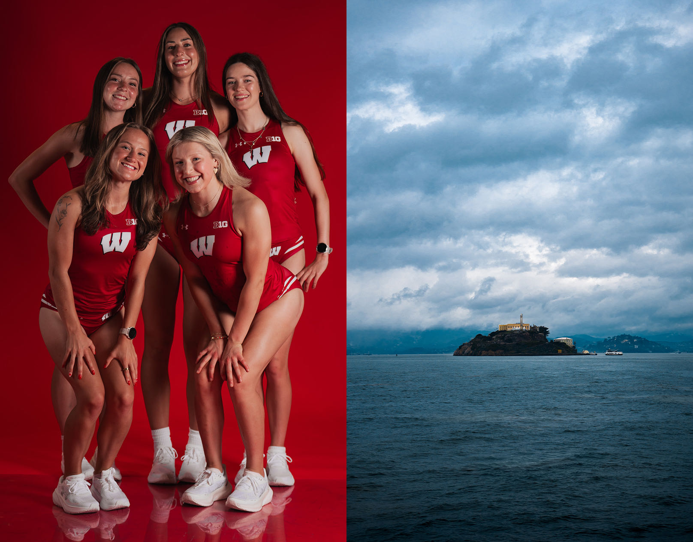
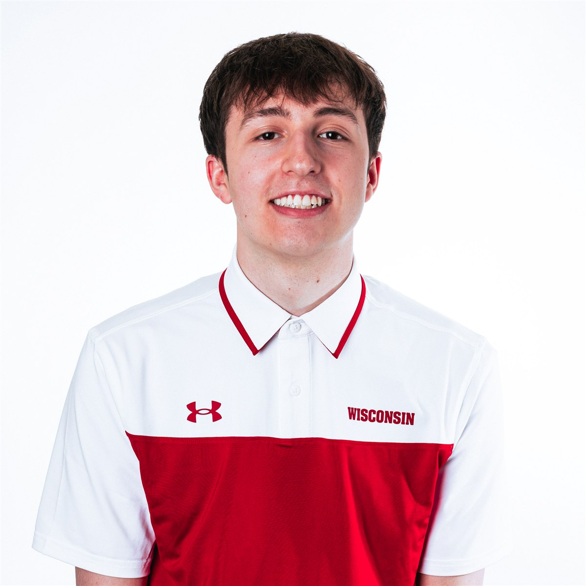

Portfolio
2026
Connor Oamek
I’m a graphic designer expanding into UI/UX, passionate about sports, gaming, and the visual worlds around them.
My work.
01 — 06
 01
01
Wisconsin Athletics Internship
Sports graphics ↗︎
 02
02
Seattle SuperSonics Rebrand
Brand identity ↗︎
 03
03
MADE Hoops Internship
Digital & social design ↗︎
 04
04
School & Personal Projects (UI/UX & Graphic)
Coursework & personal work ↗︎

05Photography
Media Day & personal photos ↗︎
 06
06
Freelance YouTube Thumbnails
Thumbnail design ↗︎
About me
Graphic design first, with a growing focus on UI/UX.
I’m a graphic designer with six years of experience creating digital content, brand identities, and promotional graphics. I’m passionate about my work, especially projects connected to sports and gaming, where visual storytelling can bring audiences closer to the experiences they love. As I grow into UI/UX, I’m focused on making those experiences clear, engaging, and intuitive.

Freelance Graphic Designer
Jan 2020–Sep 2026
100M+
combined views on content featuring my thumbnails
Created custom YouTube thumbnails with Photoshop and Blender for hundreds of creators, collaborating directly with clients to bring their ideas to life.
Current work
Wisconsin Athletics
Creative Student Intern
Sep 2023–May 2024 · Mar 2026–Present
MADE Hoops
Creative Intern
Mar 2026–Present
Education
University of Wisconsin–Madison
B.S. Art: Graphic Design
Expected May 2027
Practice & tools
Design
Branding, typography, layout, photo manipulation, user research, interaction design
Software
Photoshop, Illustrator, InDesign, Figma, Blender, Maya, Unreal Engine 5, Unity 6
Off the clock
Things I enjoy
- Gaming
- Movies
- Music
- Basketball
- Tech experiments
- Hiking
- Photography
- Travel
- Family & friends
On repeat
Favorites
- Movie
- The Batman
- Single player game
- The Last of Us Part II
- Multiplayer game
- Marathon
- Album
- Process · Sampha